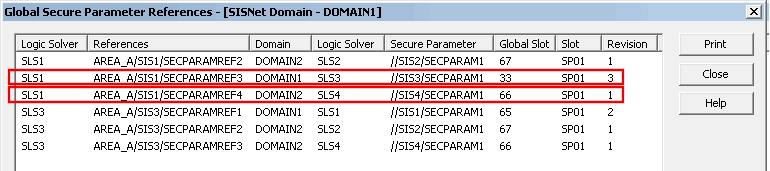
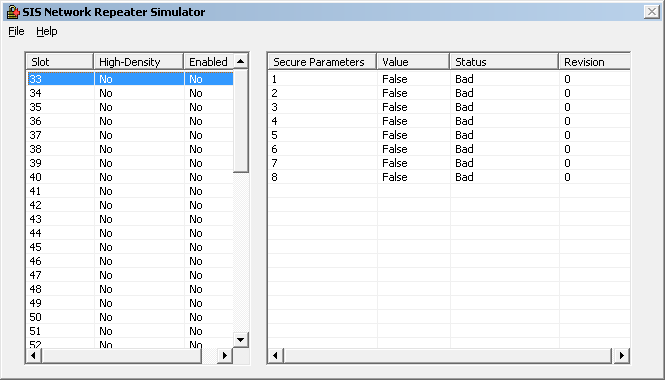
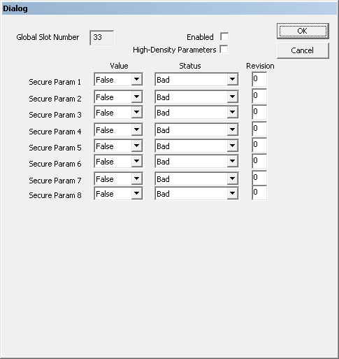

SLS 1508: Global secure parameter reference simulation
SIS1is in DOMAIN1. This discussion applies to both system and domain global parameter references.
The following figure shows the Global Secure Parameter References dialog for DOMAIN1 in the example configuration.

The list includes secure parameters referenced in DOMAIN1 that are:
Published as System Globals anywhere in the SIS Network (except as noted below).
Published as Domain Globals within DOMAIN1 (except as noted below).
The list does not include references to secure parameters within the logic solver containing the secure parameter or in other logic solvers associated with a controller that is common to logic solvers. SIS1/SECPARAM1 is the only instance in the example that illustrates this. The reference exists in SLS1and is therefore not in the list. If the example had another logic solver in CTRLR1 and that logic solver had a module that also referenced SIS1/SECPARAM1, the reference would not appear in the list either.
There is also a System Global Secure Parameter References list available from the SIS Network context menu that lists only secure parameters published as System Globals in the SIS Network. Secure parameters published as Domain Globals do not appear in this list.
To test the logic of module SIS1 the secure parameter references in it that reference secure parameters in SLS3 and SLS4 (the placeholder logic solvers) must be simulated. The first column of the list shows the logic solver that contains the reference. The fourth column shows the logic solvers that contain the parameter being referenced. The only references that exist in SLS1 that refer to secure parameters in SLS3 or SLS4 are the two highlighted in the figure. These are the two references that must be simulated to test module SIS1.
Record the information in the last three columns for these two rows and create a table.
To simulate these secure parameter references run the SIS Network Repeater Simulator (SNRSimulator.exe) from the Windows Run command.
You must run SNRSimulator on the workstations that are running the modules you are testing.
The left pane of the SNRSimulator lists the global slots (numbers 33 through 64 for Domain Global Secure Parameters and 65 through 80 for System Global Secure Parameters). Two additional columns indicate which global slots (if any) contain high-density secure parameters and if simulation is enabled for a slot. The right pane of the dialog is initially empty.
For example, to begin simulating the value for SIS3/SECPARAM1, click a global slot in the left pane. The right pane is populated with the current values for the global slot's parameter slots.

Right-click in the right pane. The following dialog appears.

The dialog includes a read-only field that indicates the global slot whose logic solver slots you are simulating. Use the two check boxes in the dialog to enable simulation for this global slot and to simulate high-density secure parameters for this global slot.
If the Enabled check box is not selected, any simulated secure parameter from this global slot has a status of BadNoCommLUV.
If you enable high-density parameters, the number of parameters in the dialog increases from eight to 16.
Because the valid range of status and revision values for secure parameters depend on whether the parameters are high density or not, it is recommended that you verify all simulated parameter status and revision values after selecting or deselecting High-Density Parameters.
To simulate SIS3/SECPARAM1 in the example:
Select slot 33 in the left pane.
Select the Enabled checkbox.
Enter 3 in the Revision field for Secure Param 1 (Slot 1 of the SLS)
Select a Value.
Select a Status.
Click OK.
To simulate SIS4/SECPARAM1 in the example, select slot 66 in the SNRSimulator and enter appropriate values in secure parameter dialog for that slot.
The SNRSimulator must remain open during the simulation. If you close the simulator all simulated parameter values return to their defaults.
The following table summarizes the valid values for the three fields for each simulated secure parameter. The valid values for two of the fields depend on whether the parameters are high density:
| Secure Parameter Field | Description | |
|---|---|---|
| Secure Parameters | High-Density Secure Parameters | |
|
Value |
False or True |
|
|
Status |
Bad BadNotConnected GoodNonCascade |
Bad GoodNonCascade |
|
Revision1 |
0 through 7 |
0 through 3 |
The revision must match the number shown for this secure parameter's slot revision in the Global Secure Parameter References dialog. If the revisions do not match, the status of the parameter reference is ConfigErr. (The slot revision changes when a secure parameter is renamed or deleted and re-added to a module.)